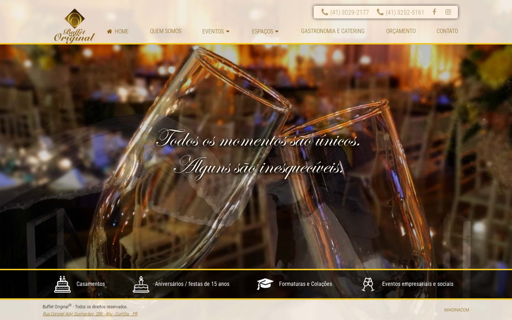
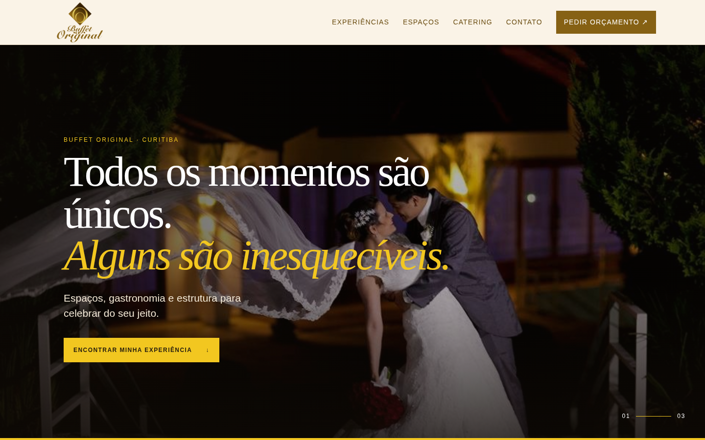

Mostrar a variedade cedo
Hero com uma mensagem curta e uma entrada por ocasião, seguido por espaços com imagem e capacidade conforme publicado.
Uma direção visual e de conteúdo para tornar espaços, ocasiões e orçamento mais fáceis de entender — sem substituir a confirmação comercial do Buffet Original.
Oportunidade
Atual × direção proposta


Prioridades
Hero com uma mensagem curta e uma entrada por ocasião, seguido por espaços com imagem e capacidade conforme publicado.
Cards com fotos locais, nome, capacidade publicada e acesso à página correspondente — sem prometer disponibilidade.
CTA persistente e contatos visíveis, sempre apontando para os canais oficiais existentes, sem simular integração comercial.
Escopo sugerido
Home, ocasiões, espaços, catering e contato; revisão de textos com validação da equipe.
Seleção e tratamento de assets oficiais; novas fotos apenas se fornecidas ou autorizadas.
CTA, telefone, WhatsApp, e-mail e endereço conferidos com o comercial antes de publicar.
Testes de viewport, navegação por teclado, contraste, links e ausência de overflow horizontal.
Dependências
Para uma publicação real, a equipe do Buffet Original deve validar os textos, os números de telefone, os links sociais, o status dos ambientes, capacidades, imagens e qualquer informação de cardápio, datas ou disponibilidade.
Apêndice
Este conceito usa evidência pública observada em 17/07/2026 e assets baixados do domínio oficial. O site original também apresenta conteúdos e contatos que podem mudar; a última avaliação datada encontrada em portal de casamentos é de 2022, por isso não foi usada como prova recente. Nenhum depoimento, cliente, evento, preço, cardápio ou disponibilidade foi inventado.